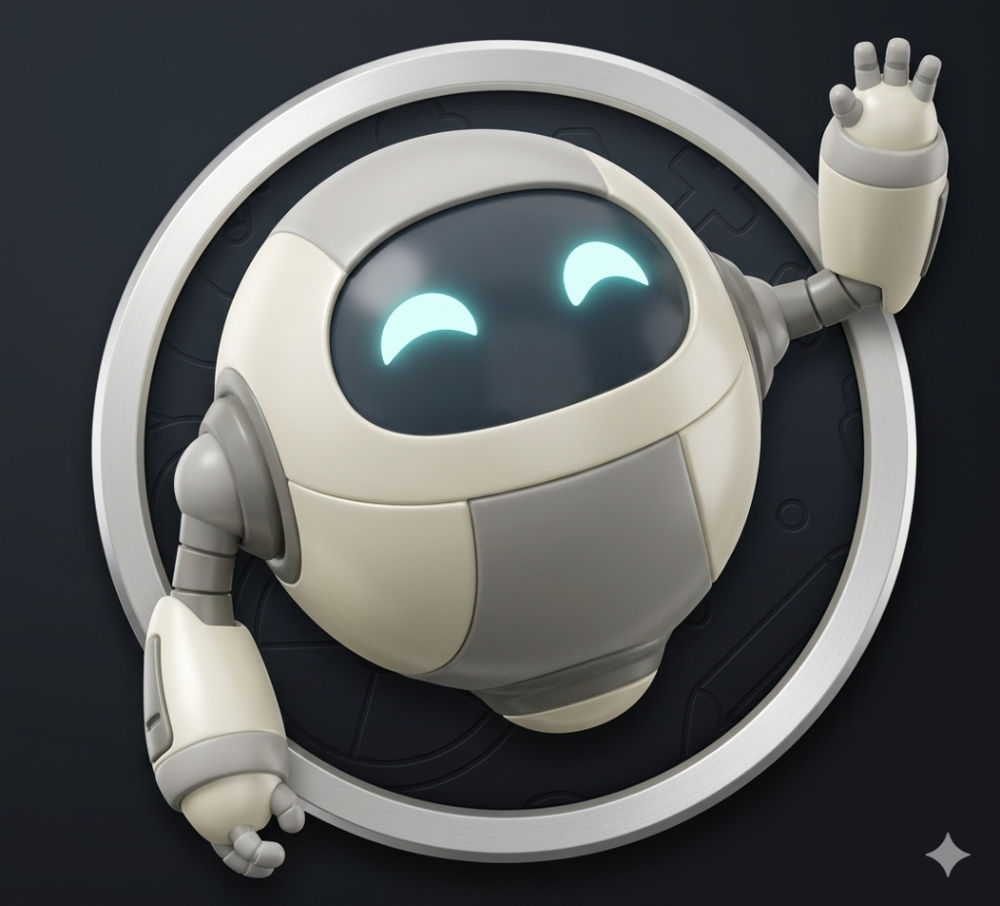

Simuladores & Mentoría IA
1. Simuladores Oficiales
Selecciona tu institución para iniciar una prueba con reactivos idénticos a los del examen real.
Universidad Veracruzana
Formato EXANI-II (CENEVAL)Simulador web premium con 120 reactivos dinámicos, cronómetro oficial de 3 horas y retroalimentación inteligente al finalizar.
UNAM
Concurso de Selección LicenciaturaPruebas adaptadas a las 4 áreas de conocimiento. Incluye física, química, literatura e historia de México y universal.
Instituto Politécnico Nacional
Nivel Superior (Ingeniería y Ciencias)Enfocado en razonamiento matemático avanzado, física y comprensión de textos científicos. Preparado para el nuevo temario.
UAM
Examen de Selección (CBI, CBS, CSH)Módulos de razonamiento verbal y matemático con preguntas específicas según la división académica elegida.
BUAP
Examen General de Admisión (EGA-I)Evaluación diagnóstica y de selección estructurada en habilidades de pensamiento y lenguaje.
Otras Universidades
UADY, UAEMEX, UANL, etc.¿Tu universidad aplica EXANI-II u otro examen propio? El simulador UV te sirve perfectamente como base de entrenamiento global.
2. Asesor de Aprendizaje IA
Conversa con tu tutor inteligente para diseñar tu plan de estudio, resolver dudas del examen y analizar tus puntajes.

Mac Tutor IA
Siempre en líneaTu compañero virtual de estudio. Diseñado para apoyarte con paciencia, darte explicaciones sencillas y mantener tu motivación al máximo antes del examen real.
Preguntas Frecuentes
¡Qué onda! 👋
Soy Mac, tu compañero de estudio. Sé que prepararse para el examen de admisión puede llegar a ser estresante, pero no estás solo en esto.
Cuéntame, ¿a qué carrera e institución aspiras entrar? O si prefieres, dime qué tema te está dando dolores de cabeza hoy y lo resolvemos juntos paso a paso.
3. Creadores & Mentores Recomendados
Canales de YouTube con mayor índice de aprobación estudiantil para complementar tu preparación.

Profe Cristian
Especialista EXANI-IIReferente en Pensamiento Matemático y Redacción Indirecta para el EXANI-II. Explicaciones paso a paso con trucos rápidos y guías oficiales resueltas.

Iknium Editorial
UNAM / COMIPEMSEl canal con mayor trayectoria preparando estudiantes para el ingreso a la UNAM y bachilleratos. Clases completas de historia, español, física y química.

Cursos De Volada
Explicaciones RápidasAprende los temas más difíciles de tu examen de admisión en tiempo récord. Resúmenes directos al grano y bancos de preguntas filtradas.

Profe Antonio Díaz
Módulos EspecíficosEspecialista enfocado en desglosar las áreas de estudio del nuevo EXANI-II. Estrategias comprobadas para asegurar un puntaje sobresaliente en tu universidad.